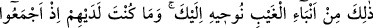

ÂYETLERDEN YÜZ ÇEVİRENLER
102. (Ey Muhammed) İşte bu (Yûsuf kıssası) gayb haberlerindendir. Biz onları
sana vahyediyoruz. Onlar hîle yaparak işlerine karar verdikleri zaman sen onların
yanında değildin.
103. Sen ne kadar istesen de insanların çoğu îman edecek değildir.
104. Halbuki sen buna karşılık onlardan hiçbir ücret istemiyorsun. O (Kur’an)
âlemler için ancak bir öğüttür.
105. Göklerde ve yerde nice âyetler vardır ki, onların yanından yüzlerini
çevirerek geçerler.
106. Onların çoğu Allah’a ancak şirk koşarak îman ederler.
107. Onlar Allah tarafından kuşatıcı bir felâket gelmesi veya farkında olmadan
kıyametin ansızın kopması karşısında kendilerini emîn mi gördüler?
Ey Muhammed! “İşte bu” yani Yûsuf (a.s.)’a dair bütün anlatılanlar, “gayb
haberlerindendir.” Bilgisi senin açından gaib olan haberlerdendir. “Biz onları sana”
Cebrail’in lisanıyla “vahyediyoruz.”
“Onlar hîle yaparak işlerine karar verdikleri zaman” Babası onu kendileri ile
beraber göndersin diye Yûsuf’a ve babasına tuzak kurarlarken, onu kuyuya atacakları
hususunda kesin bir karara varırlarken “sen onların yanında değildin.”
Hz. Peygamber (a.s.)’ın o zaman orada olmadığı hiç şüpheye mahal olmayacak
şekilde bilinmesine rağmen, gerek Kureyşliler’den gerekse diğerleri arasından vahyi
inkar edenleri susturmak maksadıyla “sen onların yanında değildin” buyrulmuştur.
Çünkü yalanlayanlar da kesin olarak biliyorlardı ki Peygamberimiz bu ve benzeri
sözleri bilenlerden değildi. Ne bir kimseden bir şey okumuş, ne de birinden bir şey
duymuştu. Bu kıssayı kavmi de bilmiyordu. İşte böyle olmasına rağmen bu kıssayı haber